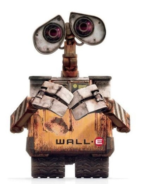
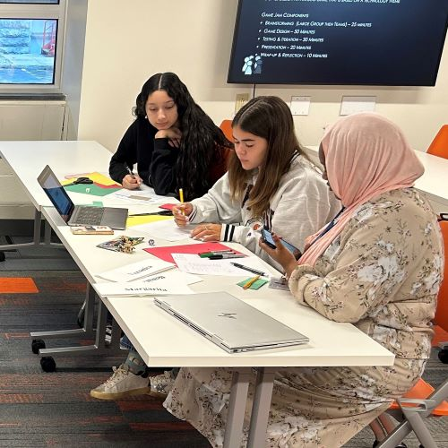
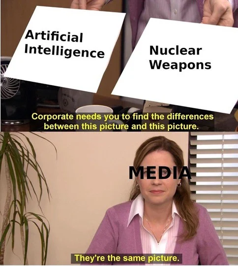

The STRONG Museum
Margarita Munoz / July 27th, 2023
Yesterday I was able to visit the STRONG museum in Rochester. The day started off with an activity where we were given artifacts and had to make an exhibit for them. My artifact was an old advertisement for Pong-Tron with two women standing in front of the game. The name of my exhibit was Women’s Backwards Role in Gaming because a lot of women are only used for attracting men to play the game and not to be inclusive.
Later in the day we were able to explore the museum. My favorite moment was shopping for the mini Wegmans and playing games at the Video Game Hall of Fame. Another thing I really enjoyed was the barbie exhibit as I saw one I used to play with.
.jpg)

My Favorite Robot
Margarita Munoz / July 25th, 2023
My favorite robot from movies I have watched is WALL-E. He is my favorite because I love how he is curious and lonely. I also like him because he played a big part in the movie that shows us an idea for what the world will be like if we don't take care of it. I still feel a little weird seeing a robot having a human-like personality and I still feel that way when I saw the robot today in class. However seeing how WALL-E was programmed to clean up our earth I can now see how robots can help us better our earth, so it did leave me a little more open minded. The best way to not make robots “lazy” is not make them be focused on the reason they were made. If a robot was made to act/ be like a human then it would have to think like us, and we discussed that humans are naturally “lazy.”
Infografic
Margarita Munoz / July 24th, 2023
In todays class I had to make an Infografic, I wanted to do it about donuts beucase they are my favorite dessert.

Game Jam
Margarita Munoz / July 21st, 2023
Our game was based on Wordle. First you would have to declassify the letter based on the code that was given and then you would have to rearrange the letter so that they spell out a word. We made different words based on three categories, easy, medium and hard. Easy words were 5 letters long, medium were 6 and hard words were 7. Some colleges were making the game too easy and too hard. At first we didn't give any hints for the codes, later we gave the whole key to the code. However, That took away from the game and made it too simple so we decided to give hints to what the code could be, like A=D. If I had more time to work on the game I would probably make the words be based on one category, for example food or colors.
My Favorite HTML Tutorial
Margarita Munoz / July 21st, 2023
This video below is a short tutorial on HTML for beginners. It starts by talking about the diffrent languages you can use to code and make your website. The second half of the video shows a small tutorial on VS Code. I liked this video because it was under 10 minutes yet was very informative with basic information. Enjoy!
MEME Blog
Margarita Munoz / July 18th, 2023
Machine learning is an application of AI(Artificial Intelligence). It's the process of using mathematical models of data to help a computer learn without direct instruction. This enables a computer system to continue learning and improving on its own, based on experience. In recent years AI has become the center of many controversies such as the originality and creativity of its ideas (plagiarism). That is not the only concern, just like in the movies people believe that ai is the threat to humanity (might just take over the world). This meme above is trying to convey how the media plays AI to be destruction and that this idea has been passed to the population. I believe that the meme was successful in conveying its message because comparing AI to nuclear weapons (which are really dangerous and could cause us all to die) and saying the same tells us AI is dangerous. However, in the second picture, the person saying that AI and nuclear weapons are the same is labeled ‘Media’ , furthering my point
Small History on Mary Louise Parther
Margarita Munoz / July 18th, 2023
American spy Mary Louise Prather, who was born in 1913, was one of the first women to work in the field of cryptography. She performed the majority of her cryptography-related work during the beginning of the Cold War era and World War II. Prather had a wide range of positions at the Signal Intelligence Service (SIS).
She started out as a junior clerical worker and moved up within the company to become the Chief of the Stenographic Division. Prather's early tasks consisted of operating office machinery including the sorter, reproducer, tabulator, and key punch. Prather was also in charge of categorizing intercepted messages, but this part of the work had to be done in absolute confidentiality. distributing the deciphered messages to the proper people was Prather's third task. Prather's biggest discovery and a crucial contribution to the war effort were made possible by working with the messages while they were still encoded and later on decoded.
Prather won the Commendation for Meritorious Civilian Service award in 1969 after identifying a link between many coded Japanese messages. Her discovery eventually helped break the code the Japanese utilized to communicate encrypted messages during the war.
Citation
Wikipedia contributors. “Mary Louise Prather.” Wikipedia, Jan. 2022, en.wikipedia.org/wiki/Mary_Louise_Prather.